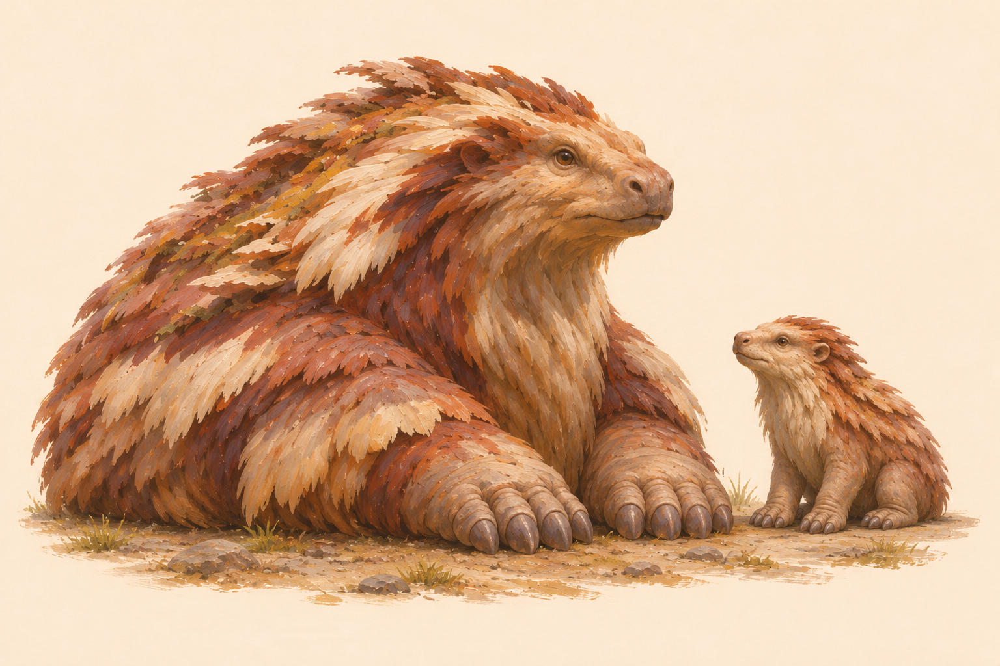

Two animal designs for finalization
The creator chose M20-R1 and number 2 with articulated legs. Number 2 is shown in its latest version with bear-like front claws.
Claude handoff · Exact files and decisions
M20-R1 · v1
Adult and cub reference explicitly identified by creator.

Broad grounded adult, rounded face, huge paws and layered russet/cream mantle; same-species young cub beside it. Omnivorous super-bear life cycle; primarily forest, also hills and plains. Mouth experiments do not apply to M20.
Open: Final name, exact size, growth timing, lifespan, reproduction, hibernation, mantle biology.
M21-23 · v5
Number 2 with articulated legs, using its latest bear-claw refinement.

High neck, crest, layered slate/cream/ochre feathered body, compact closed muzzle, strong articulated legs and broad furred front paws with stout moderately curved bear-like claws. Preserve the latest design; do not restore dangling mouthparts, the v3 raptor talons, or the v4 tiny claw tips.
Open: Final name, diet, habitat, life cycle and exact size.